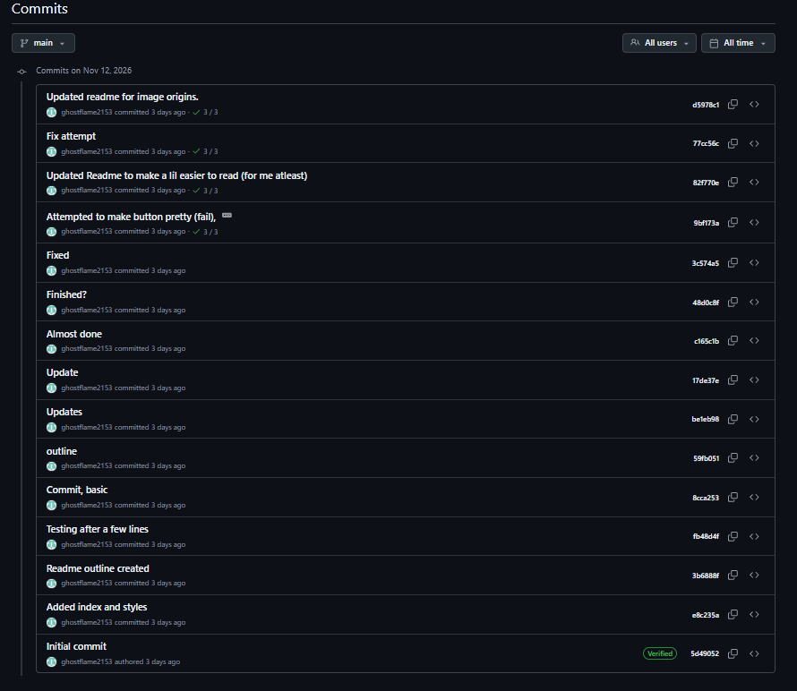
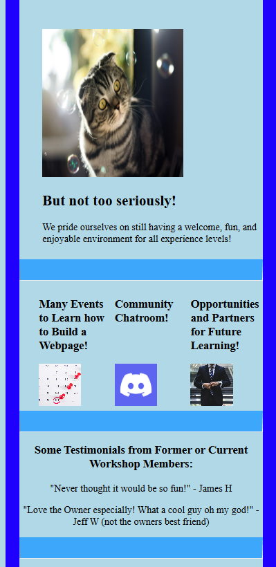
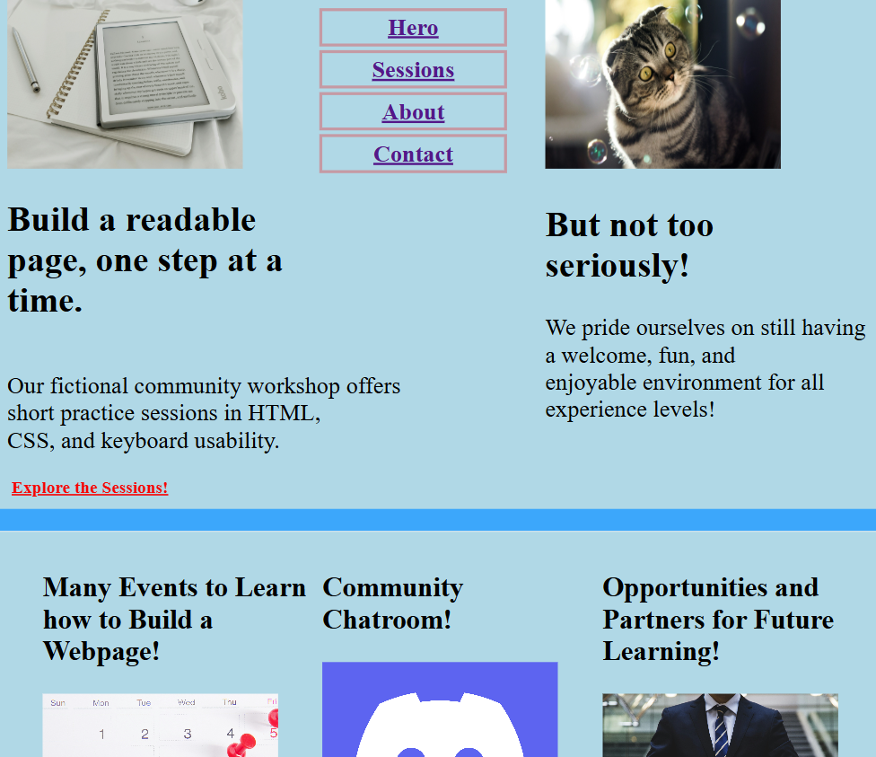

Hello there!
I am Uriel Dolgin and I am a student at Northeastern Illinois University studying computer science!
Hopefully something here is of interest and you enjoy your stay!
About me
The General Tidbits: Hello! Student at NEIU living in Chicago as a student of Computer Science.
Like many others, I enjoy video games! Video games are wonderful entry points into computer science because they encourage people to
solve problems and think creatively!
Although I probably do not have to tell you that!
As a computer science student my major goal is to become a competent developer. Currently, I still have much to learn, but I am making progress towards this! Hopefully this can help show some of the steps I am taking.
As a competent developer it would open the doors to making many interesting tools, working on influential websites, and just generally contributing to the world!
Projects
My projects help represent my skills, notably two seperate websites which help demonstrate a growing comfortability with github and responsive layouts.
Github: Profile Card

While showing the commit log is not necessarily the most informative action, it helps show how I am using github for this project, and not just uploading the finished version but saving and directly uploading from github so that the updates can be seen and worked with in real time. Here, you can see 15 commits, and for a simple project such as the Profile Card shows the frequency and comfortability with using github. In addition in using github, I also learned how many of the systems interact, such as testing the codespace feature.
Responsive Design: Project 2


These two images show the same site, just the left is at 408 width, and the right at 1600 width. As you can see, the format of these sites slightly change. This helps represent my growing ability to use viewport sizes and automatically adjust to support all platforms and devices on websites I have a hand in.
As I learn more, and both gain skills and become better at recognizing which skills are more valuable and commonly used than others this will change:
- Communication
- Adaptability
- Comfortability
This is important to communicate with fellow employees, both to get help and to be comfortable recieving it.
Tech is constantly changing, and being able to learn new tools is vital.
Being able to get comfortable with vital tools such as Visual Studio and Github can be imperative.
If you would like to contact me, you can do so through the following methods:
My Email
My Github
My Phone number
My resume is a WIP. Here is a link.